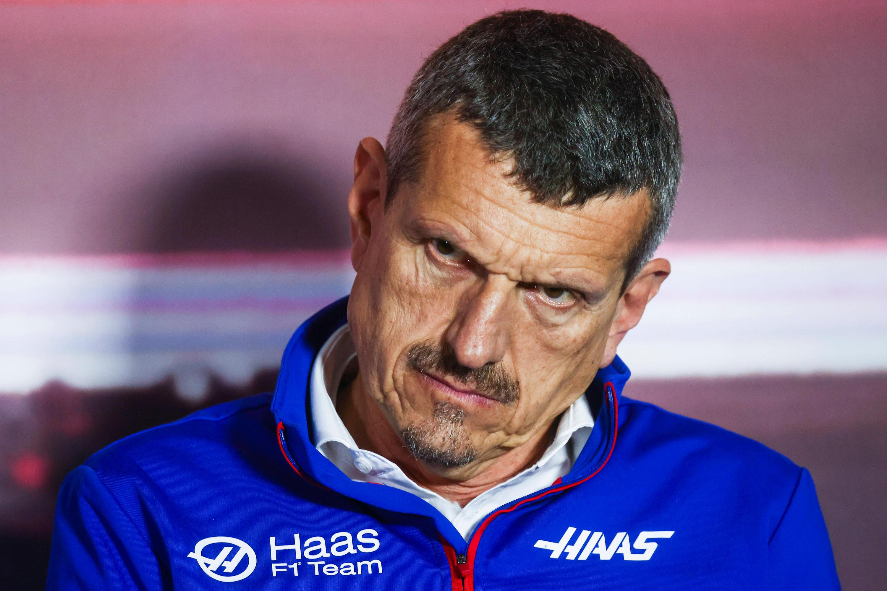

Formula One Team Principal

Günther Steiner is an Italian motorsport executive and the team principal of the Haas F1 Team in Formula One. He was born on April 7, 1965, in Merano, Italy.
Steiner began his motorsport career in the 1980s, working for several racing teams. He joined Jaguar Racing in 2002 as a test team manager, before moving to Red Bull Racing in 2005 as a technical operations director. He later joined the newly formed Haas F1 Team in 2014 as its team principal.
Under Steiner's leadership, the Haas F1 Team has become a competitive force in Formula One, scoring its first points in its debut season in 2016. Steiner is known for his straightforward and no-nonsense approach to team management, as well as his colorful personality.